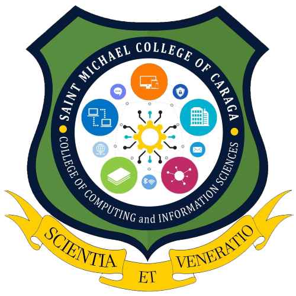

About Smcc
VISION
Saint Michael College of Caraga envisions to be a university by 2035 and upholds spiritual formation and excellence in teaching, service, and research.
MISSIONS
As such SMCC, commits itself: SMCC shall provide spiritual formation and learning culture that will ensure the students with excellent and rewarding learning experience that transform lives, abound spirituality, develop skills and prepare future leaders; SMCC shall engage to dynamic, innovative, and interdisciplinary researches that are publishable to advance and achieve institutional initiatives; and SMCC shall commit to serve the diverse and local communities in fostering innovations through service-learning that enhances reciprocal community partnerships for spiritual and social development.
GOAL
Uphold Culture of Excellence in the Areas of Spiritual Formation, Instruction, Research, and Extension, thus Produce Graduates that are Globally Competent, Spiritually Embodied, and Socially Responsible.
GENERAL OBJECTIVES
To integrate positive and evangelical values in all areas and design Christian formation programs that are effective and responsive to the psychospiritual needs of the students, pupils, parents, and personnel. To continuously enhance the curriculum and upgrade teachers’ professional, emotional, spiritual growth, and quality of instruction. To continue upgrading facilities and services for the satisfaction of the clientele. To intensify the curriculum-based and institutional researches that are dynamic, innovative, and interdisciplinary To implement programs that help educate, motivate, and inspire to assume an active role and become socially responsible stewards of God’s creation. To provide the best student services catering physical, mental, emotional, spiritual, socio-cultural needs of the students. To establish harmonious linkages with the Alumni, PTA, LGU, and other stakeholders to gain support for the school development plans. To work for Accreditation by any recognized accrediting agency.
MICHAELINIAN IDENTITY
Secured by Saint Michael the Archangel’s Sword of Bravery and Victory, nourished by the faithful acceptance and practice of the Christian teachings and guidance of the Catholic church, animated by MARY’s maternal devotion and intercession, guided by the gospel values, empowered by Christ’s life and examples - the Michaelinians of today and tomorrow are persons who are: S – ocially Responsible for the respect, care, love and development of God’s creations as such at all times demonstrate and live-out their social responsibilities; M – issionaries of Christian Values, possessing a faith that is dynamic to imbibe and to proclaim and promote the Christian values, hence, sharing in the mission of Christ and of the Catholic church to make all people members of one sheepfold of God; C – ommitted Indivuduals and/or Leaders, likened to the faithful commitment of Jesus to His Father, thus, upholding unconditional commitment to value-filled life and actions of love and mercy; C – ompetent in their Chosen Field of Endeavors, performing with in-depth confidence as they exude in competence in the performance of their chosen field of endeavors. Therefore, Michaelinians have the identities of Social Responsibility, Missionaries of Christian Values, Committed Individuals and/or Leaders, and Competent in their Chosen Field of Endeavors, which are paramount to transform people to be person-oriented, persons of values, persons of faith and love for God, and persons of love and mercy for others.

College of Arts and Sciences AB English Bachelor of Arts major in English Language

College of Business and Management BSBA - FM Bachelor of Science in Business Administration major in Financial Management BSBA - HRM Bachelor of Science in Business Administration major in Human Resource Management BSBA - MM Bachelor of Science in Business Administration major in Marketing Management BPA Bachelor of Public Administration BSE Bachelor of Science in Entreprenuership
College of Computing and Information Science BSIT Bachelor of Science in Information Technology BSCS Bachelor of Science in Computer Science BLIS Bachelor of Library and Information Science DIT Diploma In Information Technology

College of Criminal Justice Education BSCrim Bachelor of Science in Criminology BSISM Bachelor of Science in Industrial Security Management

College of Teacher Education BEEd Bachelor of Elementary Education BSEd - English Bachelor of Secondary Education major in English BSEd - Science Bachelor of Secondary Education major in Science BSEd - Soc Stud Bachelor of Secondary Education major in Social Studies BPEd Bachelor of Physical Education BTVTE Bachelor of Technical Vocational Teacher Education BECEd Bachelor of Early Childhood Education

College of Tourism and Hospitality Management BSHM Bachelor of Science in Hospitality Management BSTM Bachelor of Science in Tourism Management DHMT Diploma in Hospitality Management Technology DTMT Diploma in Tourism Management Technology Food and Beverage Services NC II Housekeeping NC II Ship's Catering Services NC I
SERVICES
STUDENTS SERVICES
Admission & Scholarship Services
Auxiliary Services
Campus Organization
Guidance Services
Health Services
Housing & Residential Services
Safety & Security Services
Student Discipline
ONLINE SERVICES
Online Enrollment
Student Portal
Official Facebook Page
YouTube Channel